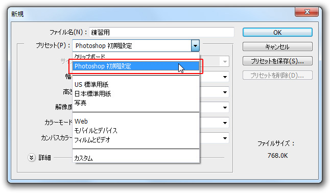
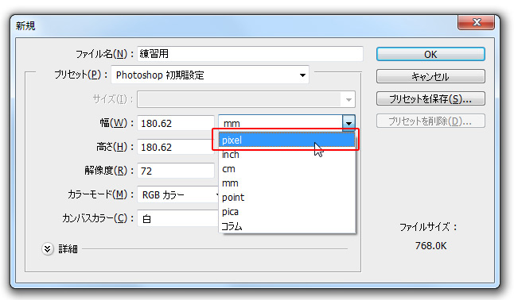

本項では、新規ファイル作成時の単位とサイズの設定方法を学習します。
サイズの設定には「幅」と「高さ」の欄に直接数値を入力する方法もありますが、
フォトショップにはプリセットという機能があります。
プリセットとは、あらかじめ設定された用紙や画面の大きさから必要なものを選択できる機能です。
たとえば、A4用紙に印刷するためにファイルを作成するなら
「プリセット」から「日本標準用紙」を選択すると
その下のサイズ欄に「A4」や「B5」、「ハガキ」といったサイズが選択できるようになります。
ここでは「Photoshop初期設定」を選択しましょう。

サイズが決まったら次は単位の設定です。
フォトショップで使用できる単位には
pixel（ピクセル）・inch（インチ）・mm(ミリメートル)など様々な単位が設定できます。
印刷用の素材作成が前提ならば「ミリメートル」を、
WEB用の素材作成が前提なら「ピクセル」が一般的に利用されています。
状況に応じて単位を変更しましょう。
ちなみに「プリセット」でサイズを決定した場合は、あらかじめ適切な単位が設定されています。
また、単位の設定はファイルを作成するとき以外に作業途中でも変更することができます。
ここでは「pixel(ピクセル)」を選択しましょう。

引き続き設定を続けます。
この画面は閉じずに次の項へ進んでください。